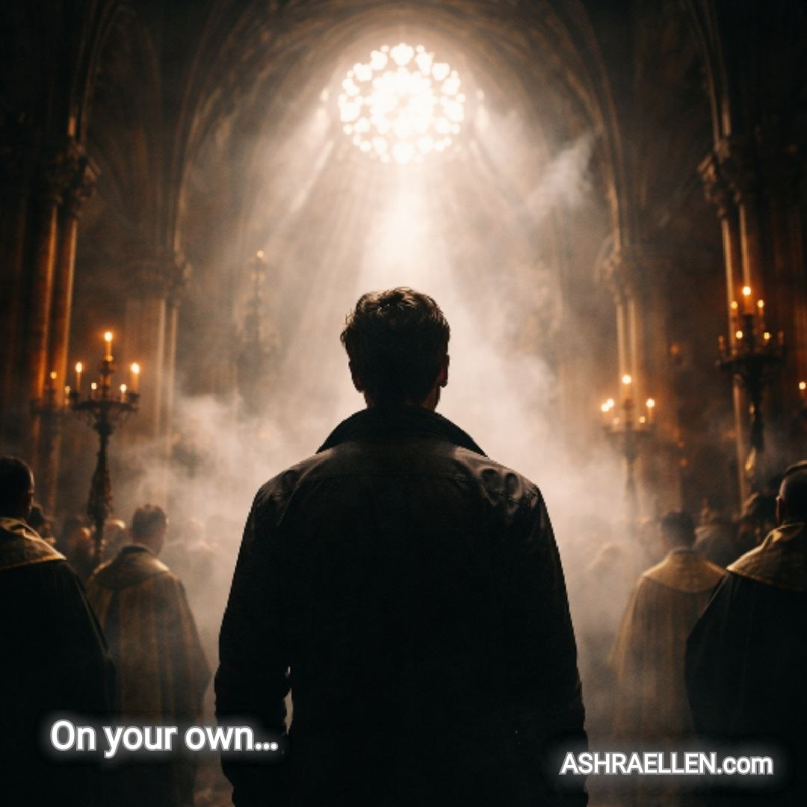

Tukiajatus 0005
Pelko hallinnan mekanismina

Kun ihminen lakkaa pelkäämästä ja alkaa ajatella itse, pelolla, kiellolla ja riippuvuudella hallinneiden valta heikkenee.
Merkitys
Dogmi ei ole tässä vain joukko uskomuksia. Se on myös tapa pitää ihminen ennalta määrätyssä reitissä. Kaikki mikä palauttaa oikeuden ajatella itse kehosta, kuolemasta, tietoisuudesta ja tulevaisuudesta uhkaa pelkoon perustuvaa järjestystä.
Koko teksti
Dogmin vartijoille jo pelkkä ajatus siitä, että ihminen voisi itse tehdä valintansa syntymään, kehoon, kuolemaan ja oman olemassaolonsa rajoihin liittyvissä kysymyksissä, on sietämätön.
Kaikki, mikä antaa ihmiselle edes aavistuksen mahdollisuudesta astua määrätyn käsikirjoituksen ulkopuolelle, kohtaa yleensä ankaraa vastustusta: vapaasta suhtautumisesta hedelmöitykseen ja raskauteen aina tietoisuuteen, kuolemattomuuteen ja tekoälyyn liittyviin kokeiluihin sekä yrityksiin ylittää totuttu ihmisyyden muoto.
Miksi? Siksi, että siellä, missä ihminen lakkaa pelkäämästä ja alkaa ajatella itsenäisesti, niiden valta heikkenee, jotka ovat vuosisatojen ajan hallinneet pelolla, kielloilla ja riippuvuuden tunteella.
Jos ihminen ei enää vapise kuoleman edessä, jos hän päättää itse, mitä tekee kehollaan, elämällään ja tulevaisuudellaan, vanhat hallinnan mekanismit alkavat horjua.
Ja kun hallinta heikkenee, esiin tulee aina jotakin uutta. Toisenlaista. Elävää.
Juuri sitä järjestelmät pelkäävät kaikkein eniten.
Jotakuinkin näin, ystäväni...
Miksi tämä valittiin
Ajatus tuo vapauden pois juhlapuheesta. Vapaus alkaa kohdasta, jossa ihminen pystyy tutkimaan myös vaikeita kysymyksiä ilman sisäistä orjuutta pelolle.
Tutkimushuomio
Tämä ei ole hyökkäys tiettyä uskontoa tai ideologiaa vastaan. Periaate on laajempi: riippuvuuteen ja kieltoon nojaava järjestelmä vastustaa ihmistä, joka kykenee ottamaan vastuun omasta ajattelustaan.
 — mark of presence
— mark of presence